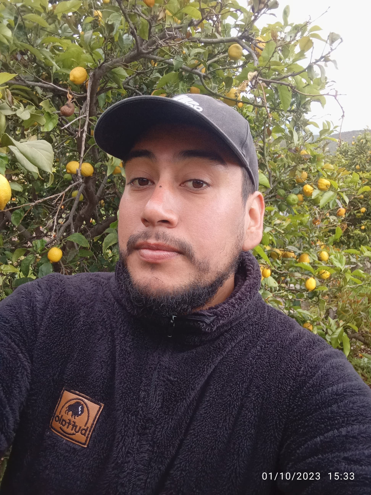
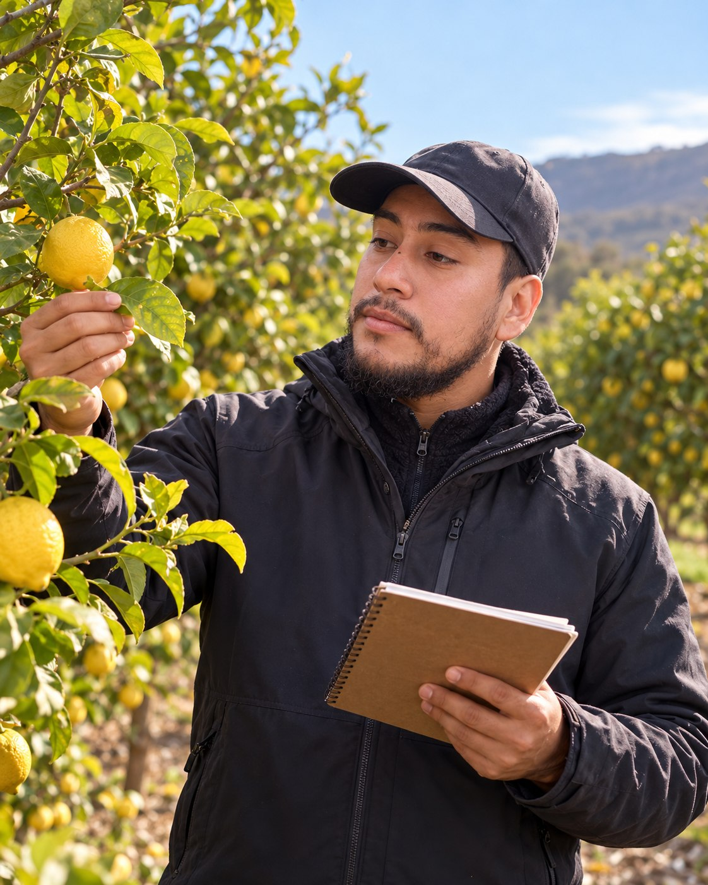
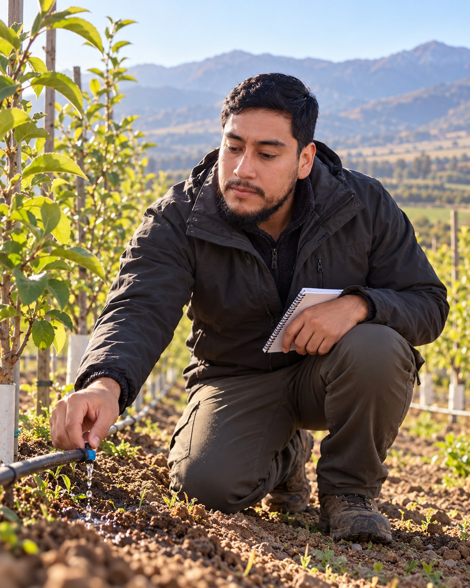
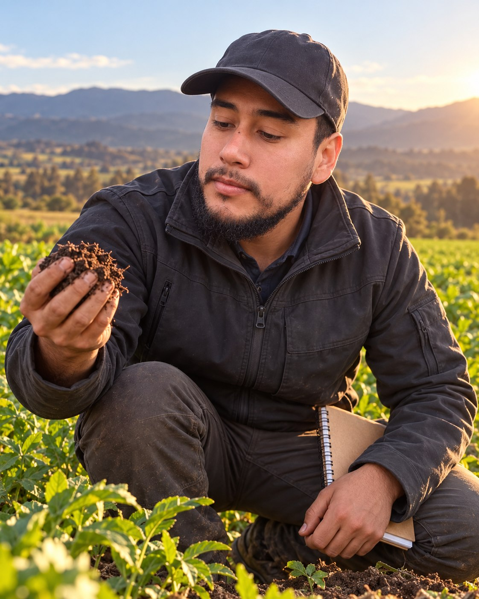
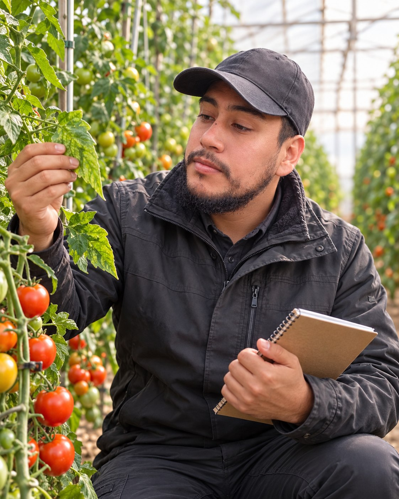
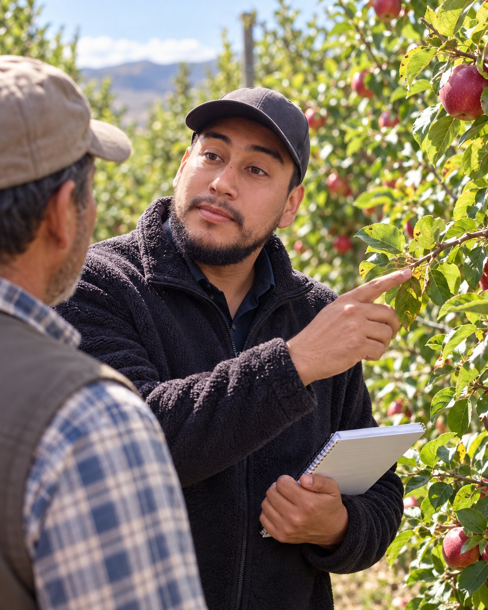
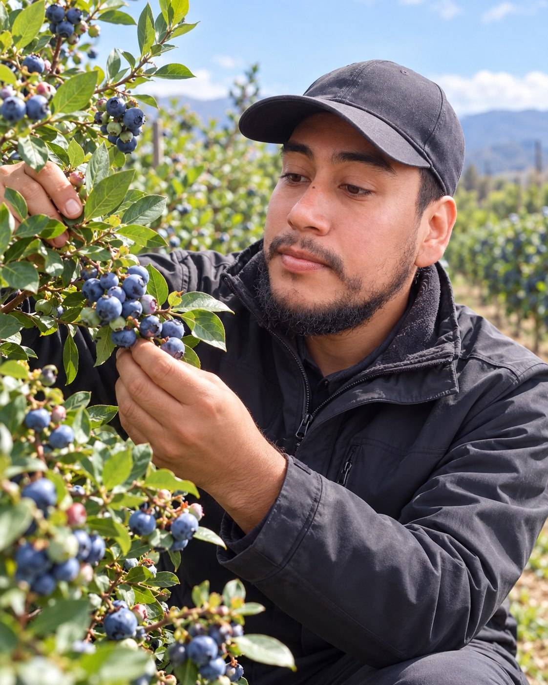
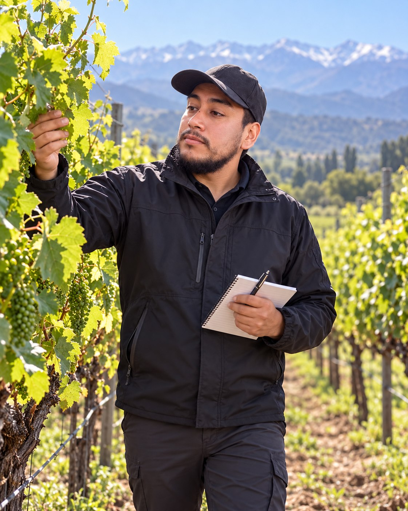

¿El riego es irregular?
Revisión de antecedentes y del sistema para identificar qué evaluar y planificar mejoras en el uso del agua.
Riego por goteo · MicroaspersiónConsultar por riego ↗¿Riego irregular, dudas de fertilización o cambios en tus frutales? Cuéntanos qué ocurre en tu predio y coordinemos la asesoría que necesitas.
Comienza con tu cultivo, comuna y motivo de consulta.

Revisamos el cultivo, el suelo y los antecedentes de manejo para definir los próximos pasos según tu situación.
Revisión de antecedentes y del sistema para identificar qué evaluar y planificar mejoras en el uso del agua.
Riego por goteo · MicroaspersiónConsultar por riego ↗Interpretación de análisis de suelo y foliares para orientar la nutrición y definir qué información falta antes de fertilizar.
Suelo · Nutrición vegetal · FertilizaciónConsultar por suelo y nutrición ↗Evaluación de frutales y hortalizas para revisar su estado, los manejos realizados y las alternativas de seguimiento.
Frutales · Hortalizas · ViñedosConsultar por mi cultivo ↗¿Buscas planificación productiva, agricultura de precisión o apoyo con registros y certificaciones? Cuéntanos tu proyecto.
Indica cultivo, comuna y problema u objetivo. Si tienes fotografías o análisis, puedes compartirlos por WhatsApp.
Revisamos los antecedentes iniciales y evaluamos si corresponde una visita, asesoría remota u otra información.
Coordinamos alcance, valor y disponibilidad antes de comenzar. El trabajo se adapta a las necesidades del predio.
En AgroIntegra acompañamos a productores de la Región de Valparaíso en riego, nutrición, suelos y manejo de cultivos. Combinamos antecedentes del predio, observación en terreno y comunicación directa.
José Ignacio Farías · Ingeniero agrícola
“Llevamos tres temporadas trabajando con AgroIntegra y los resultados han sido notables. El rendimiento de nuestro nogal aumentó un 35% gracias al plan de fertilización y el riego tecnificado que instalaron.”
“José Ignacio y su equipo son de esos profesionales que realmente se involucran con tu proyecto. El análisis de suelos cambió completamente nuestra forma de manejar el huerto de paltos. Excelente inversión.”
“Redujimos el consumo de agua en un 40% con el sistema de riego diseñado por AgroIntegra, sin perder calidad en la fruta. En plena escasez hídrica, eso es invaluable para seguir produciendo.”
Resultados relatados por cada productor. El resultado de una asesoría depende de las condiciones y el manejo de cada predio.
Con tu cultivo, comuna y motivo podemos iniciar una conversación más útil y evaluar el siguiente paso.
El valor depende del alcance, ubicación, cultivo y modalidad. Escríbenos con esos antecedentes para acordar un presupuesto antes de comenzar.
Podemos revisar los antecedentes iniciales por WhatsApp y evaluar si es posible continuar de forma remota o si hace falta una visita en terreno.
Cultivo, comuna, superficie aproximada y lo que observas o buscas mejorar. Si los tienes, añade fotografías recientes y análisis de suelo o agua en WhatsApp.
Para otras regiones, consulta por asesoría remota o visitas programadas. La disponibilidad se acuerda según el proyecto y la ubicación.
Completa los tres campos principales. No necesitas dejar tu teléfono aquí.



Imágenes ilustrativas generadas con IA a partir de fotografías de José Ignacio; representan ejemplos de asesoría.




Consulta disponibilidad para una visita en tu comuna. Para proyectos fuera de la región, evaluamos asesoría remota o visitas programadas.
Consultar cobertura en mi comuna ↗